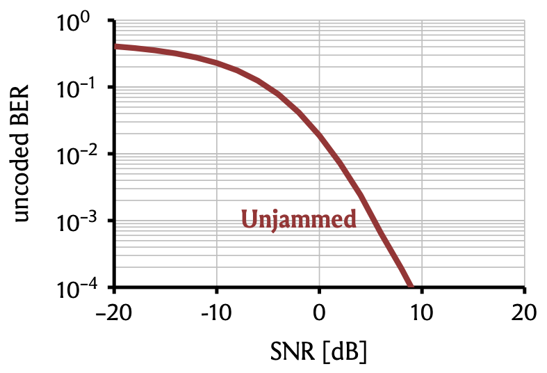
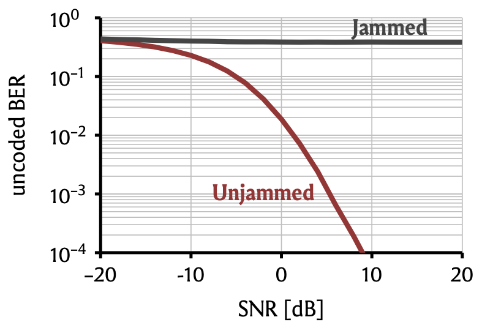
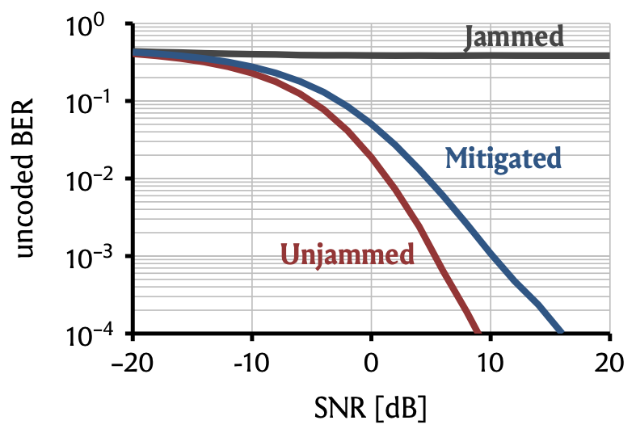

To understand the potential of MIMO processing for jammer mitigation, let us first briefly consider how regular communication in MIMO systems works, i.e., communication in the absence of jamming. For illustration, we consider the so-called multiuser MIMO uplink, where \(U\) user equipments (UEs), each equipped with single antenna, simultaneously transmit data to a \(B\)-antenna basestation. The signal that the basestation receives and samples at time \(k\) can be modeled using the language of linear algebra, as $$ \mathbf{y}_k = \mathbf{Hs}_k+\mathbf{n}_k.$$ Here, \(\mathbf{y}_k=[y_1,\dots,y_B]^T\in\mathbb{C}^B\) is a \(B\)-dimensional complex vector, where the different entries correspond to the signals that are received at the different basestation antennas; \(\mathbf{H}\in\mathbb{C}^{B\times U}\) is a complex matrix whose entry in the \(u\)th column of the \(b\)th row represents the wireless channel from the \(u\)th UE to the \(b\)th antenna of the basestation; \(\mathbf{s}_k=[s_1,\dots,s_U]^T\in\mathcal{S}^U\) is a \(U\)-dimensional vector, where the \(u\)th entry \(s_u\in\mathcal{S}\) is the data symbol that the \(u\)th UE transmits at time \(k\); and \(\mathbf{n}_k\) is any noise which corrupts the channel (typically, this would be thermal noise at the receiver) and usually modelled as white Gaussian noise, \(\mathbf{n}_k\stackrel{\text{i.i.d.}}{\sim}\mathcal{CN}(0,N_0)\). The transmit symbols \(s_u\) correspond directly to the bits that the UEs wish to convey to the basestation. E.g., the so-called transmit constellation \(\mathcal{S}\) could be BPSK, \(\mathcal{S}=\{+1,-1\}\), where transmitting the symbol \(+1\) would corresond to sending the bit zero, and transmitting the symbol \(-1\) would correspond to sending the bit one. The basestation's goal is therefore to recover, based on \(\mathbf{y}_k\), the transmit symbols contained in \(\mathbf{s}_k\). How can it do so? Assuming that the basestation knows the channel \(\mathbf{H}\), it can invert the effects of the channel by multiplying the receive signal \(\mathbf{y}_k\) with the so-called pseudoinverse \(\mathbf{H}^\dagger\) of \(\mathbf{H}\), which (with some fineprint) has the property that \(\mathbf{H}^\dagger \mathbf{H} \mathbf{s}_k = \mathbf{s}_k\). So if the basestation multiplies \(\mathbf{y}_k\) with \(\mathbf{H}^\dagger\), it obtains $$ \mathbf{H}^\dagger \mathbf{y}_k = \mathbf{H}^\dagger ( \mathbf{Hs}_k+\mathbf{n}_k ) = \mathbf{s}_k + \mathbf{H}^\dagger\mathbf{n}_k, $$ i.e., it obtains the transmit vector \(\mathbf{s}_k\), but corrupted by the noise term \(\mathbf{H}^\dagger\mathbf{n}_k\). Since the noise \(\mathbf{n}_k\) is random (and therefore unknown to the basestation), there is not much that we can do at this point. A reasonable, and in fact common, thing to do is to simply round the entries of the vector \(\mathbf{H}^\dagger \mathbf{y}_k\) to the nearest possible constellation symbol in \(\mathcal{S}\). If we use BSPK, \(\mathcal{S}=\{+1,-1\}\), this is particularly easy: If the \(u\)th enry of \(\mathbf{H}^\dagger \mathbf{y}_k\) is positive, we round to \(+1\) (i.e., we reckon that the \(u\)th UE wanted to transmit the bit zero at time \(k\)); if it is negative, we round to \(-1\) (i.e., we reckon that the \(u\)th UE wanted to transmit the bit one). How often our bit estimates will be wrong when applying this scheme depends primarily on the strength of the signal \(\mathbf{Hs}_k\) compared to the noise \(\mathbf{n}_k\), or signal-to-noise ratio (SNR).
To get a feeling for the matter, let's simulate a small system where \(U=2\) UEs transmit BSPK data to a basestation with \(B=4\) antennas,
which estimates the transmitted bits as described above.
For the wireless channel \(\mathbf{H}\), we use the simplistic but popular i.i.d. Rayleigh fading model,
meaning that the entries of \(\mathbf{H}\) are drawn independently from a complex Gaussian distribution \(\mathcal{CN}(0,1)\).
Consider the following plot of the bit error rate (BER) versus the SNR, measured in decibels (dB):

As claimed above, the BER depends heavily on the SNR. If the noise is much (\(=20\,\)dB) stronger than the signal,
the BER is almost 50%, meaning that we are completely clueless about the transmitted bits and might as well take a guess by flipping a coin.
On the other hand, if the signal is much (\(\geq10\,\)dB) stronger than the noise, then bit errors are a rare exception and
happen in less than \(0.01\)% of the cases.
The upshot is that as long as we can ensure that the signal strength exceeds the strength of the channel noise, reliable transmission of information is possible.
Let us now consider how the impact of a malicious changes the behavior of our communication system.
We now assume that, in addition to the \(U\) legitimate UEs, there is a single-antenna jammer that emits strong Gaussian interference \(w_k\)
to make it impossible for the basestation to recover the transmit signal \(\mathbf{s}_k\).
The wireless channel between the jammer and the basestation is then a \(B\)-dimensional vector, which we denote by \(\mathbf{j}\).
With the jammer, the signal that the basestation receives at time \(k\) is
$$ \mathbf{y}_k = \mathbf{Hs}_k+\mathbf{j}w_k+\mathbf{n}_k.$$
Let's first see how the basestation fares against the jammer when it does business as usual, i.e., when it simply computes
\(\mathbf{H}^\dagger \mathbf{y}_k\) and rounds the entries of the result to the nearest constellation symbol to estimate the transmitted bits.
Note that now
$$\begin{align}
\mathbf{H}^\dagger \mathbf{y}_k &= \mathbf{H}^\dagger ( \mathbf{Hs}_k+\mathbf{j}w_k+\mathbf{n}_k ) \\
&= \mathbf{s}_k + \mathbf{H}^\dagger\mathbf{j}w_k + \mathbf{H}^\dagger\mathbf{n}_k,
\end{align}$$
i.e., besides the noise term which corrupts the transmit signal \(\mathbf{s}_k\), there is now also the jammer-interference term \(\mathbf{H}^\dagger\mathbf{j}w_k\).
Since the jammer is actively hostile and presumably transmits with high power, this term can potentially be very large.
To assess the impact on system performance, we consider the same basic system parameters as before.
The jammer channel \(\mathbf{j}\) is also assumed to be i.i.d. Rayleigh fading, and we assume that the
jammer transmits at \(25\,\)dB higher power than the UEs. Let's again plot the BER as a function of the SNR:

Uh, oh. This is bad. The BER is pretty much independent of the SNR and stays around the \(40\)% to \(50\)% range.
What this means is that the thermal noise \(\mathbf{n}_k\) becomes more or less irrelevant, as the performance is limited by the strong jammer interference.
Clearly, we need to do something if we still want to accurately recover the transmitted bits. But what?
This is where the magic of MIMO processing comes into play—spatial filtering.
Note that in our model, the basestation has \(4\) antennas, and the jammer has only one.
In the parlance of linear algebra, this means that the basestation receives a \(4\)-dimensional signal,
and that the jammer interference lives on a one-dimensional subspace of the receive signal.
So the basestation can filter out the jammer by filtering out that subspace.
Mathematically, we say that the basestation can project the receive signal \(\mathbf{y}_k\) onto the orthogonal
complement of the jammmer subspace span\((\mathbf{j})\). How does it do this?
By multiplying \(\mathbf{y}_k\) with a specific matrix \(\mathbf{P}\) which is called the orthogonal projection onto span\((\mathbf{j})^\perp\).
Clearly, this matrix \(\mathbf{P}\) has to depend on the jammer channel \(\mathbf{j}\). One way to write it is
$$ \mathbf{P} = \mathbf{I}_B - \mathbf{jj^\dagger},$$
where \(\mathbf{I}_B\) is the identity matrix of size \(B\), and where
where \(\mathbf{j^\dagger}\) is the pseudo-inverse of \(\mathbf{j}\). Remember that we have already seen the pseudo-inverse before and noted that it has the
property that \(\mathbf{j^\dagger j}w_k = w_k\). The identity matrix has the property that \(\mathbf{I}_B\,\mathbf{j}w_k = \mathbf{j}w_k\).
Let's see then what happens when the basestation multiplies \(\mathbf{y}_k\) with this \(\mathbf{P}\):
$$ \begin{align}\mathbf{P} \mathbf{y}_k &= (\mathbf{I}_B - \mathbf{jj^\dagger})(\mathbf{Hs}_k+\mathbf{j}w_k+\mathbf{n}_k) \\
&= (\mathbf{I}_B - \mathbf{jj^\dagger})\mathbf{Hs}_k+(\mathbf{I}_B - \mathbf{jj^\dagger})\mathbf{j}w_k + (\mathbf{I}_B - \mathbf{jj^\dagger})\mathbf{n}_k \\
&= (\mathbf{I}_B - \mathbf{jj^\dagger})\mathbf{Hs}_k+ \mathbf{I}_B\,\mathbf{j}w_k - \mathbf{jj^\dagger}\mathbf{j}w_k + (\mathbf{I}_B - \mathbf{jj^\dagger})\mathbf{n}_k \\
&= (\mathbf{I}_B - \mathbf{jj^\dagger})\mathbf{Hs}_k+ \mathbf{j}w_k - \mathbf{j}w_k + (\mathbf{I}_B - \mathbf{jj^\dagger})\mathbf{n}_k \\
&= (\mathbf{I}_B - \mathbf{jj^\dagger})\mathbf{Hs}_k+ (\mathbf{I}_B - \mathbf{jj^\dagger})\mathbf{n}_k \\
&= \mathbf{P} \mathbf{Hs}_k + \mathbf{P}\mathbf{n}_k.
\end{align}$$
The jammer signal has disappeared! What remains looks like a jammerless system, except that the wireless channel is now not
\(\mathbf{H}\) anymore, but \(\mathbf{PH}\), and that the noise is now not \(\mathbf{n}_k\) anymore but \(\mathbf{Pn}_k\).
The basestation can now treat it as such and multiply the signal \(\mathbf{Py}_k\) with the pseudo-inverse of \(\mathbf{PH}\).
We obtain
$$ (\mathbf{PH})^\dagger\mathbf{Py}_k = \mathbf{s}_k + \mathbf{H}^\dagger\mathbf{Pn}_k, $$
where the only term that corrupts the transmit signal is noise-related.
Let us therefore see how the BER vs. SNR dependence looks:

Much better. As the SNR increases, the BER again goes down to \(0.1\)% and beyond.
But it is not quite as good as the jammerless system: To reach a BER of \(0.1\)%, we need roughly \(5\,\)dB higher SNR. Why?
When we applied the projection \(\mathbf{P}\) to the receive signal \(\mathbf{y}_k\), we rejected a part of the receive signal,
and with it a part of the received information—namely the part of the signal that comes from the same direction (or subspace) as the jammer interference.
So a part of the useful information ends up as collateral when we null the jammer. There is no such thing as a free lunch.